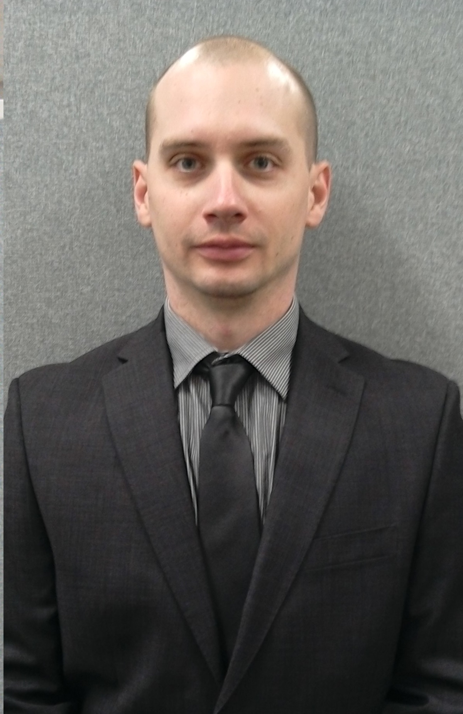
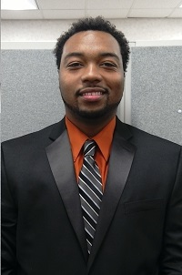
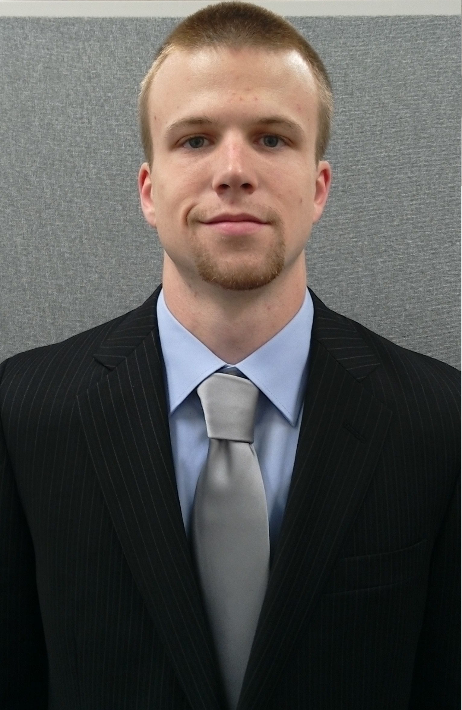

Meet team Air Mail!
- 
James Tate
Computer EngineerTeam LeadLead Flight ProgrammerMission Planner ProgrammerHardware Designjct322@msstate.eduResume Tyler Hannis
Electrical EngineerLead Delivery ProgrammerFlight ProgrammerDelivery Hardware DesignerHardware Designtjh153@msstate.eduResume- 
Boddrick Hudson
Computer EngineerLead Delivery Hardware DesignerImage Processing ProgrammerClient Server ProgrammerHardware Design (Pilot)bh392@msstate.eduResume - 
Josh Dowdy
Computer EngineerLead Image ProcessingClient Server ProgrammerMission Planner ProgrammerHardware Designjld563@msstate.eduResume
The Air Mail Team is made up of four members (three Computer Engineering Majors, one Electrical Engineering Major). Feel Free to scroll over our photo's to learn more about us.
Faculty Advisor

Dr. Bryan A Jones
Assistant Professor
Department of Electrical and Computer Engineering
Mississippi State University
Bryan A. Jones (S’00–M’05) received the B.S.E.E. and M.S. degrees in
electrical engineering from Rice University, Houston, TX, in 1995 and 2002,
respectively, and the Ph.D. degree in electrical engineering from Clemson University,
Clemson, SC, in 2005. From 1996 to 2000, he was a Hardware Design Engineer for Compaq,
specializing in board layout for high-availability RAID controllers. He is currently
an Assistant Professor at Mississippi State University, Mississippi State, MS. His
research interests include robotics, real-time control-system implementation, rapid
prototyping for real-time systems, and modeling and analysis of mechatronic systems.